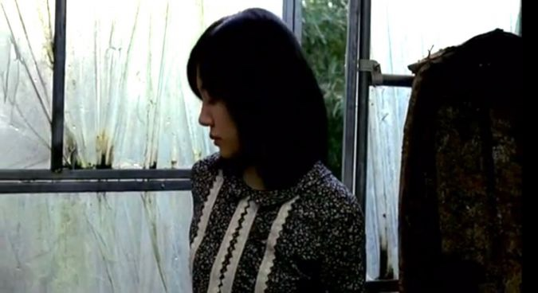

원전과 영화는 고전과 현대라는 시대적 배경 자체에서부터 큰 차이를 보인다. 따라서 아래는 영화의 배경에 대한 부분을 중심으로 살펴보겠다.
꽃무늬 패턴 활용

'수연'이 깔려 죽었던 옷장을 보고 겁에 질린 '은주'
'은주'의 방의 꽃무늬 카펫와 이불'
'은주'의 붉은 불라우스와 꽃무늬 벽지
영화 <장화, 홍련>의 벽지는 모두 어두운 분위기의 꽃무늬이다. '수미', '수연' 자매의 친어머니가 자살하고, '수연'이 깔려 죽은 옷장의 무늬 역시 꽃무늬이다. 또한, 두 자매가 입고 나온 의상 대부분 역시 꽃무늬이다.
그만큼 영화 내에서 꽃무늬가 굉장히 중요한 미장센 담당하고 있다. 이는 <장화홍련전>에서 장미와 연꽃으로 대변되는 자매의 상징성을 통해 원천소스와의 연결성을 영화 곳곳에 만들어 놓았다는 것을 보여준다.
색채 활용
'은주'의 방과 붉은 장롱과 푸른 로브
'수미', '수연' 자매가 자는 방의 푸른 이불과 베개
부엌의 붉은 타일
영화 내에서 꽃무늬만큼 많이 활용된 색은 붉은색과 푸른색이다. 벽지, 바닥, 소품, 그리고 자매의 의상뿐만 아니라 새어머니 '은주'의 의상에서도 붉은색과 푸른색이 자주 쓰인다. '장화', '홍련'이라는 이름에 담겨 있는 붉은색을 필두로 강렬한 원색 대비가 두드러진다. 붉은색과 푸른색과 더불어 중요한 색채로 강조되고 있는 것은 초록색이다. 과거 '수연'이 살아 있을 때의 그녀의 의상 및 소품들로 자주 쓰이는데, 붉은색과 푸른색과 대비되는 강렬한 원색으로서 영화 내 스산한 분위기에 일조하고 있다.
이는 꽃무늬처럼 원전 인물의 심벌을 가져와 영화 전반의 분위기와 성격을 결정함과 더불어 공포와 연관된 색채심리를 고정된 화폭 속의 색을 통해 자신의 의도를 표출했다고 볼 수 있다.